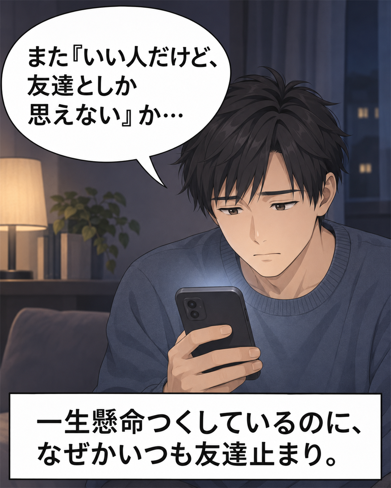
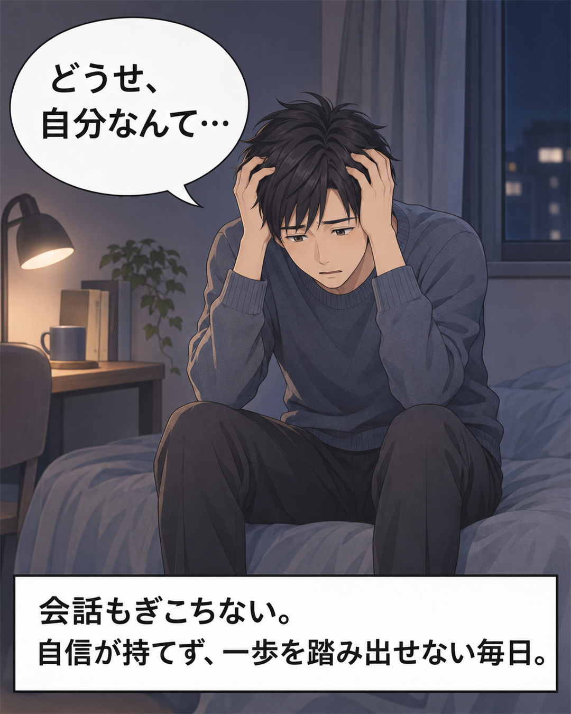
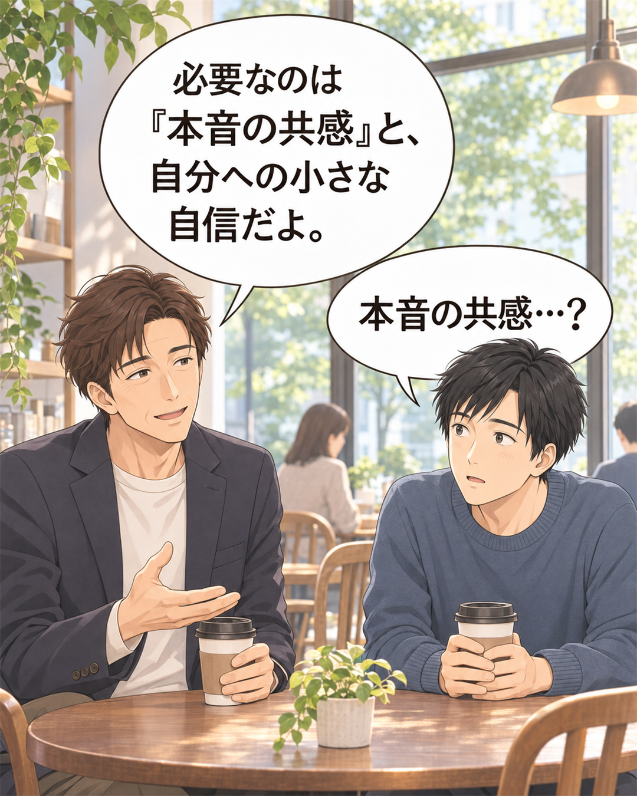
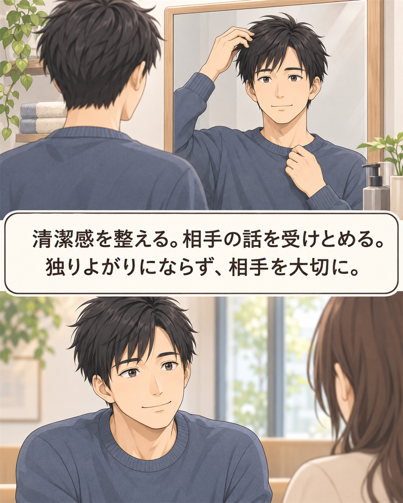
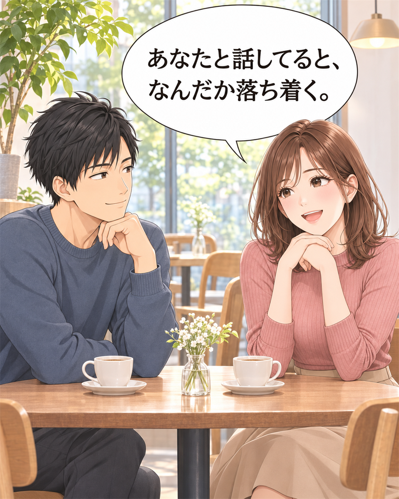
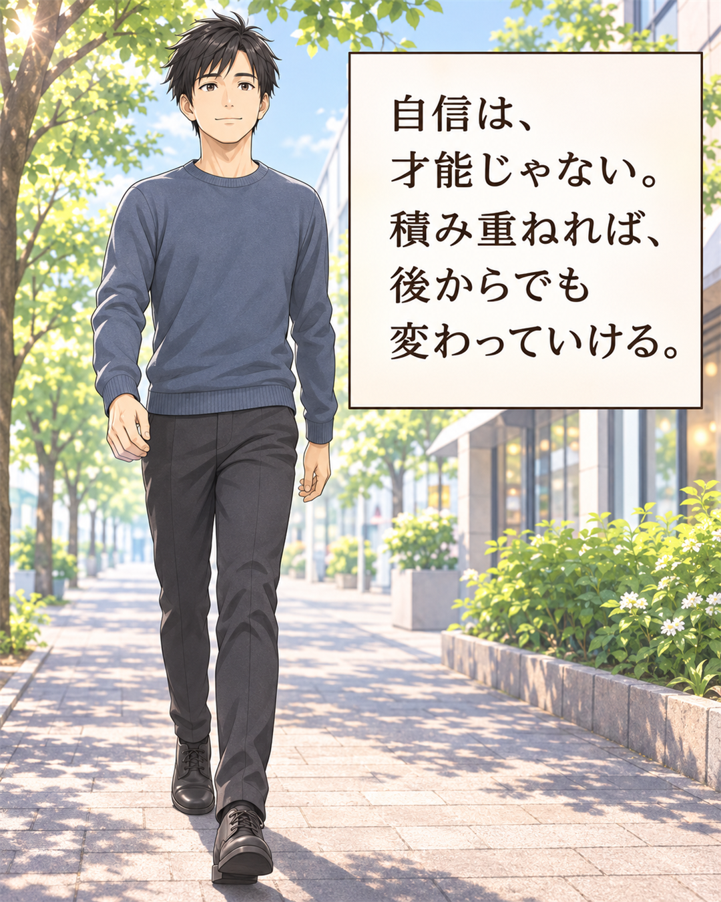

このまま“いい人”を続けると。
何人見送っても、結局また「いい人だね」で終わる。
まわりは少しずつ幸せそうで、自分だけが同じ場所に立っている——。
でも、それはあなたの“性格”のせいじゃない。ただ、やり方を知らなかっただけです。
いい人止まり。長続きしない。自信がない。
そんな僕を変えたのは、派手なテクではなく、地道で誠実な“当たり前”でした。






何人見送っても、結局また「いい人だね」で終わる。
まわりは少しずつ幸せそうで、自分だけが同じ場所に立っている——。
でも、それはあなたの“性格”のせいじゃない。ただ、やり方を知らなかっただけです。
昔の僕も、全部そうでした。でも、原因と手順さえ分かれば、ちゃんと変わっていけます。
恋愛がうまくいく人は、特別な才能を持っているわけではありません。やっているのは、地に足をつけた“当たり前の自分づくり”と、相手を大切にする“誠実さ”だけ。カッコつけて背伸びするより、一つずつ着実に。それが、いちばんの近道でした。
今回noteで紹介する内容を地道にコツコツ続けて、今は最高のパートナーに出会い、充実した日々を送っています。
その“再現できた手順”だけを、noteにまとめました。
小手先のテクニックではなく、僕が実際にやってきた“再現できる手順”です。
A. はい。むしろ“いい人止まり”で悩んできた人に向けた内容です。
A. まずは無料パートから読めます。この先は有料のnote記事で、強引な勧誘や高額商材はありません。
A. 記事の前半（いい人止まりから変わるまでの話）は無料、具体的な手順（全5章）が有料です。
無料パートだけでも、どんなマインドを持つことが大切なのかが分かります。
読んでみて合わなければ、そっと閉じてもらって大丈夫です。
「自分には無理だ」と、どうか諦めないでください。彼女がいる毎日は、人生をぐっと楽しく、豊かにしてくれます。まずは無料パートから、読んでみてください。
無料パートを読む（note）無料で読めます。※登録不要